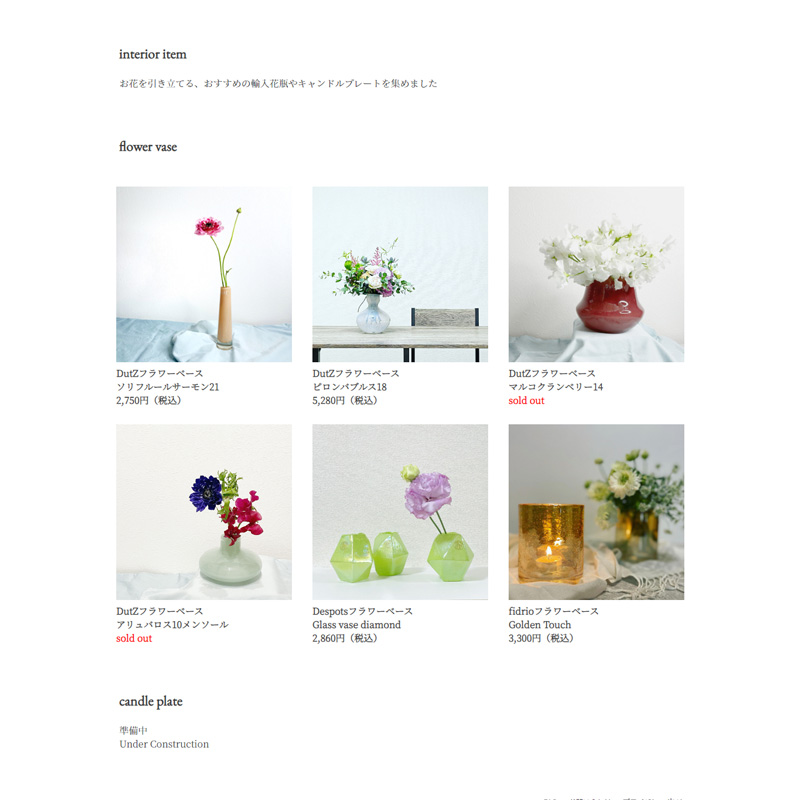

Portfolio INDEX

コーディング

チョーカ 美司記
Mitsuki Ciołka
1986/5/29
- ■2009年 名古屋芸術大学 デザイン学部卒業
- ■資格：2級ウェブデザイン技能士
- IC3 GS5、IC3 GS6 Level.1
- 色彩検定２級、文部科学芸委員
- 日本商工会議所簿記検定３級
- 日本語教育能力検定試験合格、TOEIC590点
- 第一種普通自動車免許、山野流着装奥伝講師
- ■特技：フラワーアレンジメント、着付け、細かい作業
- ■好きなこと・もの：フラワーアレンジメント、ボードゲーム、映像作品鑑賞
Skills
| microsoft Excel 操作可能。グラフ、資料の作成が可能。関数も簡単なものは扱えます。 |
|
 |
microsoft Word 操作可能。文書の作成や差し込み印刷などが出来ます。 |
| microsoft Power point 操作可能。資料やスライドショーの作成が出来ます。 |
|
| Adobe Illustrator 操作可能。バナーやチラシ、ロゴの作成などが出来ます。 |
|
 |
Adobe Photoshop 操作可能。写真加工やバナー、デザインカンプの作成が出来ます。 |
 |
Adobe Premiere Pro 基本操作可能。動画の編集が出来ます。 |
| Adobe Dreamweaver 基本操作可能。フォーマットを用いてサイトやメルマガの作成が出来ます。 |
|
 |
Adobe XD 基本操作可能。デザインカンプの作成が出来ます。 |
| Visual Studio Cord HTML/CSSを使用したWebサイトのコーディングが出来ます。 |